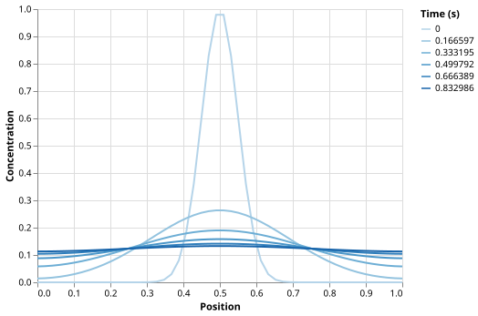

1D Diffusion Simulation
21.1 The Problem
- Diffusion describes how a dissolved substance spreads through a stationary medium over time
- The key physical idea is that the substance moves from regions of high concentration toward regions of low concentration
- The rate of change at any point is proportional to how much its concentration differs from the average of its immediate neighbours
21.2 Setting Up the Grid
- Discretize the domain \([0, 1]\) into evenly spaced grid points separated by \(\Delta x\)
- Represent concentration as a 1D NumPy array, one value per grid point
- Choose the number of points and the pulse width so the initial Gaussian is well-resolved
DTis derived from the stability condition explained below- The initial concentration is a Gaussian pulse centered in the domain:
21.3 Deriving the Update Rule
- Label grid points \(i = 0, 1, \ldots, N-1\) and time steps \(n = 0, 1, 2, \ldots\)
- Write \(c_i^n\) for the concentration at point \(i\) after \(n\) steps
- The statement “the rate of change is proportional to the deviation from the neighbourhood average” becomes:
\[\frac{c_i^{n+1} - c_i^n}{\Delta t} = \frac{D}{\Delta x^2}\left(c_{i+1}^n - 2c_i^n + c_{i-1}^n\right)\]
- The left side is the forward difference in time
- The change in one step divided by the step size
- The right side uses the centred second difference in space
- \((c_{i+1}^n - 2c_i^n + c_{i-1}^n)/\Delta x^2\) measures how much \(c_i^n\) deviates from the average of its two neighbours
- Both approximations follow from truncating a Taylor series after the leading term
- The error in each approximation shrinks as \(\Delta t\) and \(\Delta x\) shrink
- Rearranging gives the explicit update rule:
\[c_i^{n+1} = c_i^n + r\left(c_{i+1}^n - 2c_i^n + c_{i-1}^n\right)\]
- \(r = D\,\Delta t / \Delta x^2\) is called the stability ratio.
21.4 Stability
- The explicit scheme only produces physically correct results when \(r \le 0.5\)
- If \(r > 0.5\) the numerical solution grows without bound, producing meaningless results
- This bound can be derived mathematically, but we treat it empirically: set
STABILITY_RATIO = 0.6and run the simulation for 20 steps to see what happens to the concentration values - We choose
DTso that \(r\) =STABILITY_RATIO= 0.4, giving a 20% safety margin below the limit.
DT is computed as STABILITY_RATIO * DX**2 / DIFFUSIVITY, so r = STABILITY_RATIO at every run. Which change would make r exceed 0.5 and make the simulation produce meaningless results?
- Setting STABILITY_RATIO = 0.6
- Correct: r equals STABILITY_RATIO by construction, so r = 0.6 > 0.5 and the scheme will blow up.
- Doubling
GRID_POINTS -
Wrong: a finer grid halves
DX, butDTis recalculated fromDX**2, so r =STABILITY_RATIOis unchanged. - Multiplying DIFFUSIVITY by 10
- Wrong: DT is divided by DIFFUSIVITY, so increasing DIFFUSIVITY shrinks DT and keeps r = STABILITY_RATIO.
- Running 10 000 steps instead of 500
- Wrong: the number of steps does not affect r — it only determines how long the simulation runs.
21.5 Boundary Conditions
- At the two ends of the grid (\(i = 0\) and \(i = N-1\)), the centred difference formula requires values at \(i = -1\) and \(i = N\), which do not exist
- We use zero-flux boundary conditions: no material enters or leaves the domain
- We implement this with ghost cells
- Before each update, we prepend a copy of
c[0]and append a copy ofc[-1], which makes the gradient at each boundary zero
- Before each update, we prepend a copy of
- The ghost-cell approach makes the sum of the correction term exactly zero, so total mass is conserved at each step
Put these operations in the correct order for one explicit time step with no-flux boundary conditions.
- Prepend c[0] and append c[-1] to form a padded array
- Compute the centred second difference from the padded array
- Multiply the second difference by the stability ratio r
- Add the result to the current concentration array c
The ghost-cell implementation conserves total mass exactly. Which boundary condition produces this behaviour?
- Dirichlet (absorbing): c = 0 at both ends
- Wrong: absorbing boundaries remove mass from the domain; total mass decreases over time.
- Neumann (no-flux): zero gradient at both ends
- Correct: zero-flux boundaries prevent material from entering or leaving, so mass is conserved at every step.
- Periodic: c[0] = c[-1] at every step
- Wrong: periodic boundaries also conserve mass, but they are implemented differently — the concentration wraps around, not reflects.
- No boundary condition is needed — mass is conserved automatically
- Wrong: without an explicit boundary condition the update formula has no information about what happens at the grid edges.
21.6 Running the Simulation
- Advance the concentration array one step at a time, saving a snapshot every
SNAPSHOT_INTERVALsteps - Store snapshots in a Polars dataframe with columns
x,concentration, andtime
21.7 Visualizing the Results
- Plot each snapshot as a separate line, color-coded by time, to show how the pulse spreads

21.8 Testing
- Stability check
- If
DIFFUSIVITY,DT, orDXare changed carelessly, the simulation may become unstable. - This test catches that immediately:
- If
r = DIFFUSIVITY * DT / DX**2
assert r <= 0.5- Mass conservation
- Zero-flux boundaries mean no substance leaves the domain, so total mass must be constant.
- The ghost-cell implementation conserves mass exactly in floating-point arithmetic.
- We allow a relative tolerance of \(10^{-10}\) to account for accumulated rounding over
N_STEPSsteps.
- Symmetry
- The initial Gaussian is symmetric about \(x = 0.5\), and both boundaries are identical.
- The profile must therefore remain symmetric at every step.
- Asymmetry would indicate a bug in the boundary-condition code.
- Monotone peak decrease
- As the pulse spreads, its peak value must fall at every snapshot.
- This test checks physical plausibility without requiring knowledge of the exact solution.
- Comparison to analytical solution
- On an infinite domain, a Gaussian pulse with standard deviation \(\sigma_0\) evolves so that \(\sigma^2(t) = \sigma_0^2 + 2Dt\)
- After 20 steps the pulse tails are more than \(4\sigma\) from each wall, so the boundary has negligible effect.
- We compare the numerical solution to this analytical formula.
21.9 Choosing the tolerance
- The explicit scheme has global truncation error \(O(\Delta t + \Delta x^2)\). This notation means the error scales with \(\Delta t\) and \(\Delta x^2\) as those quantities shrink, but it says nothing about the coefficient in front of them.
- With our parameters, \(\Delta t + \Delta x^2 \approx 2\times 10^{-3}\).
- Measuring the actual maximum error at \(n = 20\) steps gives approximately \(3\times 10^{-3}\). The coefficient is greater than 1, so the raw sum \(\Delta t + \Delta x^2\) underestimates the true error.
- The tolerance of \(5\times 10^{-3}\) is about 1.7 times the measured error. This is a modest safety margin: large enough to absorb minor floating-point variation between platforms, small enough that a factor-of-2 regression would still be caught.
- The factor 1.7 is empirical, not derived mathematically. Any tolerance between roughly \(4\times 10^{-3}\) and \(10^{-2}\) would be defensible here. What matters is that it is documented alongside the reasoning, so a future reader can judge whether a failing test signals a real problem or an overly tight bound.
import numpy as np
from diffusion import (
DIFFUSIVITY,
DT,
DX,
N_STEPS,
PULSE_CENTER,
PULSE_WIDTH,
SNAPSHOT_INTERVAL,
make_initial,
step,
)
def test_stability_ratio():
# The explicit scheme is stable only when r = D*dt/dx^2 <= 0.5.
# This test catches accidental changes to DIFFUSIVITY, DT, or DX
# that would break the simulation.
r = DIFFUSIVITY * DT / DX**2
assert r <= 0.5, f"stability ratio {r:.4f} exceeds 0.5"
def test_mass_conservation():
# With zero-flux boundaries, the total amount of substance is conserved.
# The ghost-cell implementation makes the correction term sum to zero in
# exact arithmetic. Floating-point rounding accumulates at roughly
# N_STEPS * machine_epsilon, so a relative tolerance of 1e-10 is safe.
_, c = make_initial()
initial_mass = c.sum() * DX
for _ in range(N_STEPS):
c = step(c)
final_mass = c.sum() * DX
assert abs(final_mass - initial_mass) / initial_mass < 1e-10
def test_symmetry():
# The Gaussian initial condition is symmetric about x = 0.5 and the
# boundary conditions are identical at both ends, so the profile must
# remain symmetric at every step. Tolerance is 1e-12 (floating-point
# symmetry of the arithmetic operations).
_, c = make_initial()
for _ in range(N_STEPS):
c = step(c)
assert np.max(np.abs(c - c[::-1])) < 1e-12
def test_peak_decreases():
# As the pulse spreads out, its peak concentration must fall monotonically.
_, c = make_initial()
peaks = [c.max()]
for i in range(1, N_STEPS + 1):
c = step(c)
if i % SNAPSHOT_INTERVAL == 0:
peaks.append(c.max())
assert all(peaks[i] > peaks[i + 1] for i in range(len(peaks) - 1))
def test_matches_analytical():
# On an infinite domain a Gaussian pulse with standard deviation sigma_0
# spreads so that sigma^2(t) = sigma_0^2 + 2*D*t (Crank 1975). After
# 20 steps the pulse tails are more than 4 sigma from each wall, so
# boundary effects are negligible.
# The scheme has truncation error O(DT + DX^2) ~ 2e-3 with our parameters.
# The measured maximum error at n=20 is ~3e-3 (the prefactor exceeds 1).
# A tolerance of 5e-3 gives a safety factor of ~1.7 over the measured error.
n_check = 20
x, c = make_initial()
for _ in range(n_check):
c = step(c)
t = n_check * DT
sigma2 = PULSE_WIDTH**2 + 2 * DIFFUSIVITY * t
analytical = (PULSE_WIDTH / np.sqrt(sigma2)) * np.exp(
-((x - PULSE_CENTER) ** 2) / (2 * sigma2)
)
assert np.max(np.abs(c - analytical)) < 5e-321.10 Exercises
21.10.1 Do the math
Using the analytical formula \(\sigma^2(t) = \sigma_0^2 + 2Dt\), compute \(\sigma^2\) after N_STEPS = 500 steps. Use PULSE_WIDTH = 0.05 for \(\sigma_0\), DIFFUSIVITY = 0.1, GRID_POINTS = 50, LENGTH = 1.0, and note that DT = STABILITY_RATIO * DX**2 / DIFFUSIVITY. Give your answer to three decimal places.
21.10.2 Step-function initial condition
Replace the Gaussian initial condition in make_initial with a step function: \(c(x) = 1\) for \(x < 0.5\) and \(c(x) = 0\) for \(x \ge 0.5\). Run the simulation and plot the results. Does test_mass_conservation still pass? Does test_symmetry pass or fail, and why?
21.10.3 Absorbing boundaries
Change the boundary conditions from zero-flux to absorbing: set c[0] = 0 and c[-1] = 0 after each update instead of using ghost cells. Run the simulation and observe how the total mass changes over time. Modify test_mass_conservation to check that mass decreases monotonically rather than remaining constant.
21.10.4 Demonstrating instability
Set STABILITY_RATIO = 0.6 (above the stability limit of 0.5) and run the simulation for 20 steps. Describe what happens to the concentration values. Confirm that test_stability_ratio catches this before any time-stepping occurs.
21.10.5 Grid refinement and convergence
Double GRID_POINTS to 100 (leaving STABILITY_RATIO unchanged so DT is recalculated automatically). Measure the new maximum error in test_matches_analytical at \(n = 20\) steps. The truncation error scales as \(O(\Delta t + \Delta x^2)\); with twice as many points, \(\Delta x\) halves and \(\Delta t\) (derived from \(\Delta x^2\)) quarters. Is the observed reduction in error consistent with this prediction?